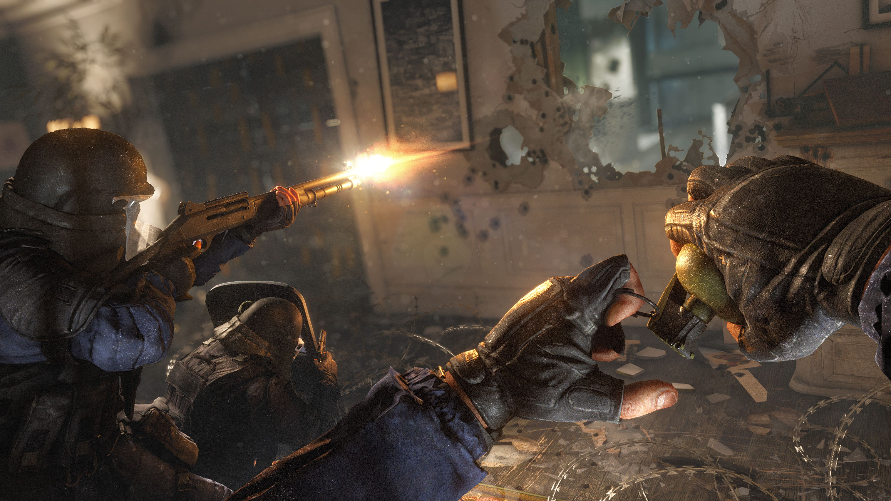
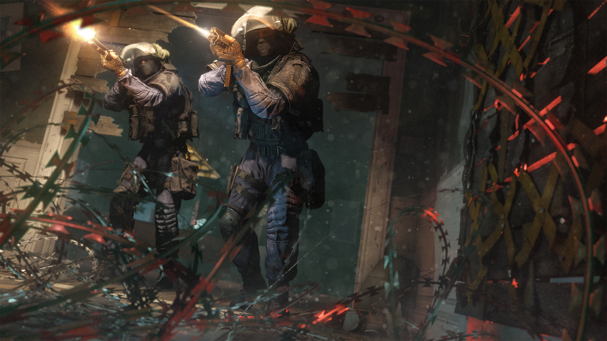

Tom Clancy's Rainbow Six Siege biedt vijf Counter-Terrorist eenheden van verschillende nationaliteiten over de hele wereld, met elk CTE met vier Operators per stuk, twee aanvallers en twee verdedigers. Slechts één kan worden gekozen per rond en kan niet worden gewijzigd totdat de ronde voorbij. Elke operator beschikt over een selectie van verschillende wapens, vaardigheden en uitrusting, die allemaal kunnen zeer beperkt zijn en moet verstandig worden gebruikt. Customization items, zoals wapen attachments, wapen skins, of zelfs Operators zelf worden verkregen door middel van het verdienen en besteden Renown .
 De belegeringWedstrijden worden uitgevoerd in een 5v5 wijze, waarbij elke speler slechts het ontvangen van één leven per ronde. Als zodanig is het uiterst belangrijk om te communiceren met teamgenoten en plan aanvallen bij een aanval of de verdediging bij het verdedigen. Aanvallers beginnen elke ronde met 60 seconden om een zenden Drone te inventariseren en items in de omgeving te ontdekken, waardoor spelers vijanden en doelen te vinden en markeer ze. Verdedigers aan de andere kant hebben de mogelijkheid om hun locatie te versterken en voor te bereiden op de onvermijdelijke aanval van de aanvallers. Dit wordt gedaan door middel van het opzetten van Versterkte Muren en Barricade rond het gebied, evenals de inzet van unieke vaardigheden om te helpen het gebied te verdedigen, zoals met Bandit's Shock Wire of Mute's Signal Disruptor.
 Het spel is voorzien van de "drie pijlers" - teamwork, tactiek en spanning. Elke kaart is voorzien van meerdere locaties voor zowel de aanvallers en verdedigers uit te kiezen, aanzienlijke verhoging van het belang in het uitvoeren van surveillence. Elke kaart is ontworpen om close-gevierendeeld georiënteerd, en hebben een nadruk op verticaliteit en vernietiging.
ProceduralDestruction De vernietiging systeem stelt spelers in staat om structuren te doorbreken door het planten van explosieven op hen of aan kogelgaten op de muren te maken door het opneemt. De omgevingen van het spel voorzien van een gelaagd materiaalsysteem, waarbij omgevingsobjecten -uitvoeringen tonen verschillende reacties aanvallen speler. Spelers mogen tactische voordelen te behalen door middel van vernietiging van het milieu, en dat het systeem is gericht op de spelers aan te moedigen creativiteit en strategie te gebruiken. Met het oog op een realistische gameplay te maken, wordt een kogel penetratie systeem gekenmerkt, waarbij kogels gaan minder schade als ze vijanden te raken door middel van structuren. Hierdoor ontstaat een steeds veranderende omgeving op de kaart, waardoor het van vitaal belang voor spelers om kenners van hun omgeving te zijn en samen te werken.